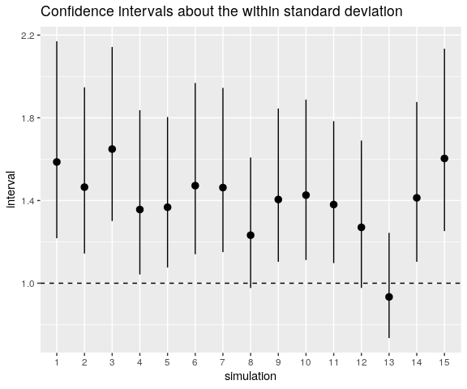
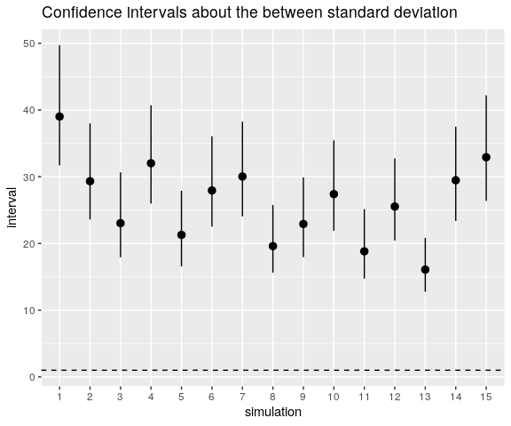
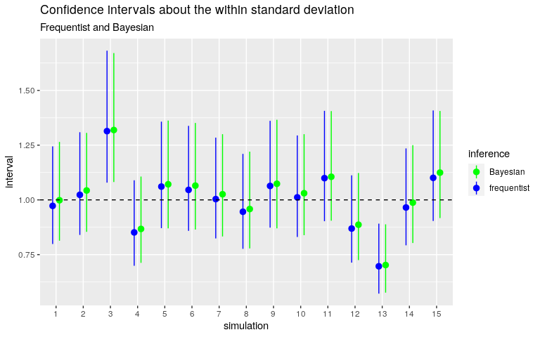
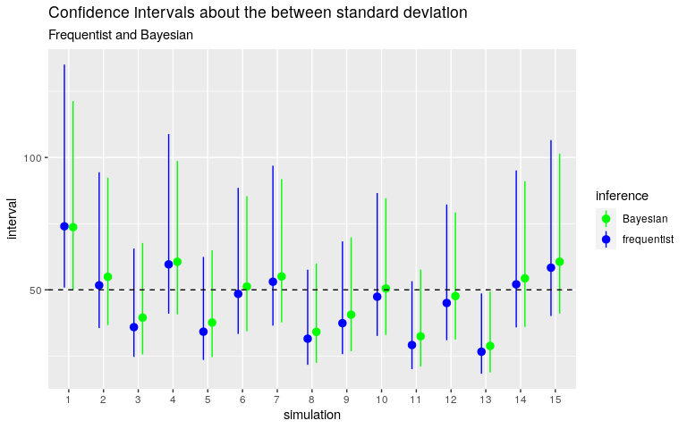
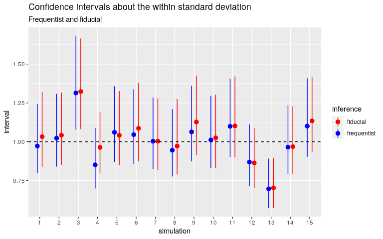
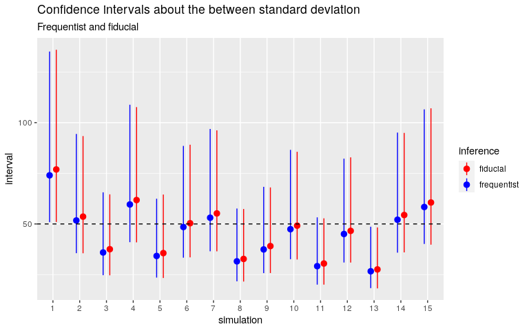

Why I like generalized fiducial inference
Throughout this article, one considers the balanced one-way ANOVA model with a random factor (group). The between standard deviation and the within standard deviation are denoted by \(\sigma_{\mathrm{b}}\) and \(\sigma_{\mathrm{w}}\) respectively. The grand mean is denoted by \(\mu\). The number of levels of the group factor is denoted by \(I\) and the number of individuals within each group is denoted by \(J\). Thus the model is: \[
\mu_i \sim_{\text{iid}} \mathcal{N}(\mu, \sigma_{\mathrm{b}}^2), \,
i = 1, \ldots, I \qquad
(y_{i,j} \mid \mu_i) \sim_{\text{iid}}
\mathcal{N}(\mu_i, \sigma_{\mathrm{w}}^2), \, j = 1, \ldots, J.
\]
Using ‘rstanarm’ with the default priors
Below I fit the model with the ‘rstanarm’ package for fifteen simulated datasets with \(I = 10\), \(J = 5\), \(\mu = 10000\), \(\sigma_{\mathrm{b}} = 50\), \(\sigma_{\mathrm{w}} = 1\). I assign a “vague” half-Cauchy prior distribution to \(\sigma_{\mathrm{w}}\) and the other prior distributions are the default prior distributions of stan_lmer.
library(rstanarm)
options(mc.cores = parallel::detectCores())
mu <- 10000
sigmaWithin <- 1
ratio <- 50
sigmaBetween <- sigmaWithin * ratio
I <- 10L
J <- 5L
nsims <- 15L
stanIntervals <- list( # to store the confidence intervals
within = `colnames<-`(matrix(NA_real_, nrow = nsims, ncol = 3),
c("estimate", "lwr", "upr")),
between = `colnames<-`(matrix(NA_real_, nrow = nsims, ncol = 3),
c("estimate", "lwr", "upr"))
)
set.seed(666L)
for(i in 1L:nsims){
groupMeans <- rnorm(I, mu, sigmaBetween)
y <- c(
vapply(groupMeans, function(gmean) rnorm(J, gmean, sigmaWithin), numeric(J))
)
dat <- data.frame(
y = y,
group = gl(I, J)
)
rstanarm <- stan_lmer(
y ~ (1|group), data = dat, iter = 5000L,
prior_aux = cauchy(0, 5)
)
pstrr <- as.data.frame( # extract posterior draws
stan,
pars = c(
"(Intercept)",
"sigma",
"Sigma[group:(Intercept),(Intercept)]"
)
)
names(pstrr)[2L:3L] <- c("sigma_error", "sigma_group")
pstrr[["sigma_group"]] <- sqrt(pstrr[["sigma_group"]])
x <- t(vapply(pstrr, quantile, numeric(3L), probs = c(50, 2.5, 97.5)/100))
stanIntervals$within[i, ] <- x["sigma_error", ]
stanIntervals$between[i, ] <- x["sigma_group", ]
}Let’s plot the intervals now.
library(ggplot2)
stanWithin <- as.data.frame(stanIntervals[["within"]])
stanWithin[["simulation"]] <- factor(1L:nsims)
ggplot(
stanWithin,
aes(
x = simulation, y = estimate, ymin = lwr, ymax = upr
)
) +
geom_pointrange() +
ylab("interval") +
geom_hline(yintercept = 1, linetype = "dashed") +
ggtitle("Confidence intervals about the within standard deviation")
The horizontal line shows the value of \(\sigma_{\mathrm{w}}\). As you can see, the confidence intervals dramatically fail to catch this value.
And this is also the case for \(\sigma_{\mathrm{b}}\):
stanBetween <- as.data.frame(stanIntervals[["between"]])
stanBetween[["simulation"]] <- factor(1L:nsims)
ggplot(
stanBetween,
aes(
x = simulation, y = estimate, ymin = lwr, ymax = upr
)
) +
geom_pointrange() +
ylab("interval") +
geom_hline(yintercept = 1, linetype = "dashed") +
ggtitle("Confidence intervals about the between standard deviation")
Resolving the issue
Why? The explanation is simple: stan_lmer assigns a unit exponential prior distribution to the between standard deviation, which is equal to \(50\).
So we have to change this prior distribution, and stan_lmer allows to use a Gamma distribution as the prior distribution of the between standard deviation. Its parameters shape and scale are settable in the decov function which is passed on to the prior_covariance option:
rstanarm <- stan_lmer(
y ~ (1|group), data = dat, iter = 5000L,
prior_aux = cauchy(0, 5),
prior_covariance = decov(shape = 2, scale = 30)
)I choose the \(\textrm{Gamma}(\textrm{shape}=2, \textrm{scale=30})\) distribution because it has median \(\approx 50\) and is “vague” enough: its equi-tailed \(95\%\)-dispersion interval is \(\approx (7, 167)\).
☛ However it took me some time to pick up these parameters. I firstly tried a more dispersed Gamma distribution but stan_lmer returned a bunch of warnings and non-sensible results.
Below are the confidence intervals obtained with this Gamma prior distribution. I compare them with the frequentist intervals obtained with the ‘AOV1R’ package.


Quite good.
☛ I also noticed that the sampling was slower with this Gamma distribution.
Try the generalized fiducial inference.
My new package ‘gfilmm’ allows to perform the generalized fiducial inference for any Gaussian linear mixed model with categorical random effects.
Fiducial inference and Bayesian inference have something in common: they are both based on a distribution representing the uncertainty about the parameters: the fiducial distribution and the posterior distribution, respectively.
A notable difference between these two methods of inference is that there’s no prior distribution in fiducial statistics.
Here is how to run the fiducial sampler:
library(gfilmm)
fiducialSimulations <- gfilmm(
y = ~ cbind(y - 0.01, y + 0.01), fixed = ~ 1, random = ~ group,
data= dat, N = 10000L
)Note the form of the response variable: ~ cbind(y - 0.01, y + 0.01). That’s because the generalized fiducial inference applies to interval data.
Below are the fiducial confidence intervals for the same simulated datasets as before.


Quite good too. And let me insist on this point: there is no prior distribution, there is nothing to set, except the number of simulations. I implemented the algorithm (due to J. Cisewski and J. Hannig) in C++ and it takes less than 1000 lines of code.
Let’s increase the between standard deviation now.
ratio <- 1000
sigmaBetween <- ratio * sigmaWithin
set.seed(31415926L)
groupMeans <- rnorm(I, mu, sigmaBetween)
y <- c(
vapply(groupMeans, function(gmean) rnorm(J, gmean, sigmaWithin), numeric(J))
)
dat <- data.frame(
y = y,
group = gl(I, J)
)
library(AOV1R)
library(gfilmm)
aovfit <- aov1r(y ~ group, data = dat)
gf <- gfilmm(~ cbind(y-0.01, y+0.01), ~ 1, ~ group, data = dat, N = 5000L)
confint(aovfit)
## estimate lwr upr
## grandMean 9783.4770335 9227.6673527 10339.286714
## within 0.9454425 0.7762205 1.209696
## between 776.9682432 534.4260219 1418.441282
## total 776.9688185 534.4268604 1418.441598
##
## attr(,"confidence level")
## [1] 0.95
## attr(,"standard deviations")
## [1] TRUEgfiSummary(gf)
## mean median lwr upr Pr(=0)
## (Intercept) 9786.579629 9787.161625 9247.718851 10344.743737 NA
## sigma_group 854.314055 807.650667 528.463101 1485.287694 0
## sigma_error 1.557918 1.543563 1.273913 1.931306 0
## attr(,"confidence level")
## [1] 0.95The fiducial confidence interval about the within standard deviation does not match the frequentist interval, and does not catch the true value. Nothing to tinker with, except the number of simulations:
gf <- gfilmm(~ cbind(y-0.01, y+0.01), ~ 1, ~ group, data = dat, N = 30000L)
gfiSummary(gf)
## mean median lwr upr Pr(=0)
## (Intercept) 9780.0741293 9779.1304187 9230.1017080 10333.801655 NA
## sigma_group 847.3551078 805.8588214 536.0212551 1401.862597 0
## sigma_error 0.9540852 0.9455375 0.7762872 1.185648 0
## attr(,"confidence level")
## [1] 0.95Now the fiducial intervals match the frequentist ones.
Epilogue
As you have seen, using the generalized fiducial inference is easy, easier than the Bayesian inference. The difficulty I mentioned regarding the Bayesian inference is not severe, but this is because the one-way ANOVA model with a random factor is the simplest Gaussian linear mixed model. Namely, it has only one between standard deviation. Things get more complicated for a mixed model with multiple random effects. With rstanarm::stan_lmer, one has to assign a Gamma prior distribution on the total between standard deviation, and then to specify a dispersion parameter of the between standard deviations.
Note
My package ‘gfilmm’ is already on CRAN (version 0.1.0) but this version is not safe and there’s a mistake in the algorithm. If you want to use this package now, install the development version:
remotes::install_github("stla/AOV1R", build_vignettes = TRUE) # soon on CRAN
remotes::install_github("stla/gfilmm", build_vignettes = TRUE)